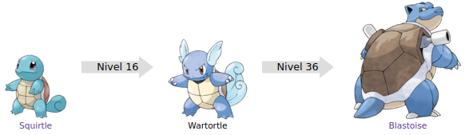

Blastoise es un Pokémon de tipo agua introducido en la primera generación. Es la evolución de Wartortle.

Evoluciones de blastoise
Su nombre proviene de las palabras inglesas blast (explosión o ráfaga) y tortoise (tortuga terrestre).
Su nombre japonés, Kamex, proviene de 亀 kame (tortuga) y de max (máximo).
Su nombre francés, Tortank, proviene de las palabras tortue (tortuga) y tank (tanque).
Blastoise está basado en una tortuga con dos cañones. Es una enorme tortuga bípeda, que puede extender unos poderosos cañones situados en su espalda para disparar potentes chorros de agua, con la fuerza suficiente para quebrar muros de hormigón o hacer agujeros en planchas de acero, para evitar el retroceso, planta firmemente sus patas traseras en el suelo antes de usar sus cañones, además de subir deliberadamente de peso. Su tonalidad es todavía un poco más oscura que la de Wartortle, además de que posee grueso cráneo y mandíbula que le sirven para usar movimientos como mordisco o cabezazo.
Pueden disparar balas de agua con suficiente precisión para golpear latas a 50 metros de distancia. Pese a ello, son incapaces de apuntar a objetivos demasiado cercanos. Su fuerza y potencia es mayor que la de una manguera de bomberos, razón por la que muchos equipos de bomberos poseen Blastoise como miembros, pues con las enormes cantidades de agua que pueden disparar cualquier incendio puede ser extinguido fácilmente. Si la potencia de sus cañones no fueran suficientes para evitar algún peligro, todavía puede ocultarse en su caparazón para esconderse o aplastar a su oponente con su enorme peso.
Página creada por Luis Felipe Restrepo y Daniel Felipe Gutierrez
Información extraida de: Blastoise. (s. f.). WikiDex. Recuperado 5 de noviembre de 2022, de https://www.wikidex.net/wiki/Blastoise